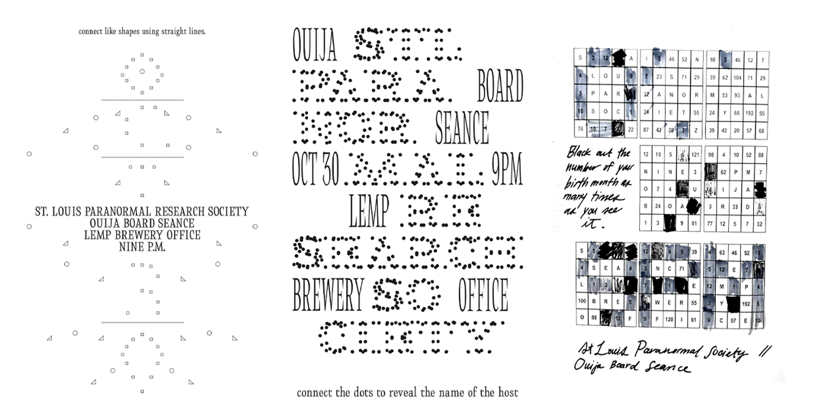
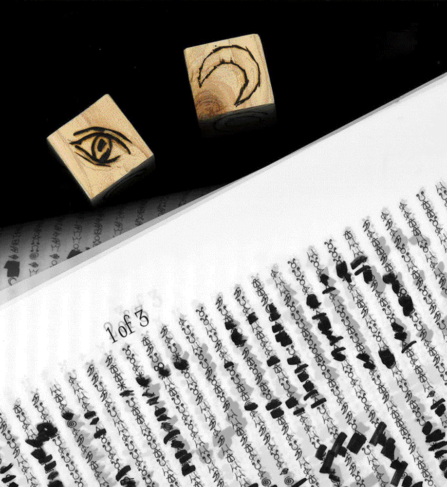

Inspired by Moniker’s Your Line or Mine and Clement Valla’s Mechanical Turk Alphabets, Betsy Ellison and I designed a set of three posters promoting a ouija board seance hosted by the St. Louis Paranormal Research Society.


Each of the three posters is integral to the legibility of the message as a whole, with the sole instruction, “Roll the die and mark out the symbol you receive, as many times as you desire. A hidden message will appear.”
Playing with the gesture of obscuring and revealing information, the posters mix clairvoyance with the occult, taking form through the participation of curious passerby.

Starting off as a blank slate, the set plays with the illusion of endless possibility in its densely textured grid of seemingly random symbols. With each letter consisting of several individually “chosen” marks, event info emerges as the result of strangers’ collaboration over the span of a day.
As “crowdsourced” posters, the success of this set relied on several rounds of testing with our classmates. We had to keep in mind different variables: how complete should the message be? What writing instruments would each mark require, and at what scale? Other questions we considered ranged from the markmaking surface, (ultimately mylar paper for its on-theme opaqueness) to the making of our dice (woodburned 2" blocks).
